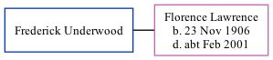

Frederick Underwood, the husband of Florence Eva Lawrence (the great-aunt of Nigel Horne), and married Florence in Bridge, Kent, England around Feb 19641.
Citations
England & Wales Marriages 1837-2005 - Findmypast
Family Tree

Generated by ged2site. Last updated on Nov 13, 2024